JParla, pas a pas
El robot de la micro:bit amb veu i moviment: mana-li gestos amb la veu, fes que repetisca el que dius movent la boca a cada síl·laba, o conversa amb la IA de Google.
Què és i com funciona
JParla és el robot de la micro:bit (el mateix cap de JFace) amb veu i moviment. Segons el mode que triïs, el mòbil pot:
| Mode | Què fa | Necessita |
|---|---|---|
| 🎭 Mou | Obeeix ordres de moviment que dius o escrius: «mira a l'esquerra, obri la boca i parpelleja tres vegades». No parla: només mou el cap. | Res més (Internet només si vols la IA per a frases lliures). |
| 🗣 Repeteix | El mòbil llig en veu alta el que escrius o dius i el robot mou la boca a cada síl·laba, gira un poc el cap i parpelleja. | Veu instal·lada al dispositiu. |
| 💬 Conversa | Contesta la IA de Google (amb la personalitat que triïs) i el robot ho diu en veu alta. | Internet i una clau gratuïta. |
En els tres modes, el que arriba a la micro:bit és el mateix paquet de 6 dígits que JFace (gir · boca · ull E · ull D): no cal canviar el programa de la micro:bit.
Què necessites
- Un mòbil Android amb Chrome (o un ordinador amb Chrome o Edge). En iPhone/iPad el Bluetooth web no funciona, però pots provar-ho tot amb el cap virtual.
- Una micro:bit amb el programa de JFace (guia de JFace). Sense micro:bit també val: es mou el cap virtual de la pantalla.
Prepara la micro:bit
JParla usa exactament el mateix programa que JFace: un servei UART Bluetooth que llig el text de 6 dígits i el reparteix a un servo de gir, un servo de boca i dos LEDs d'ulls.
- Segueix la guia de JFace (MakeCode, extensió Bluetooth, «sense vinculació», blocs i connexions) i descarrega el programa a la micro:bit.
- Si ja el tens per a JFace, no cal fer res més.
Connecta la micro:bit amb JParla
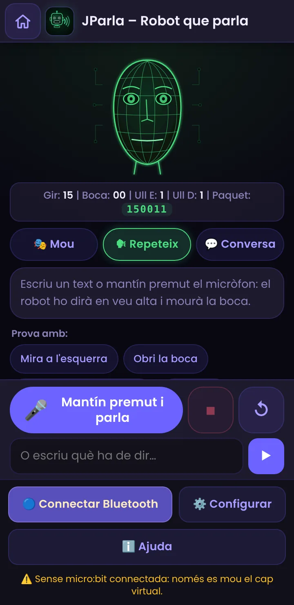
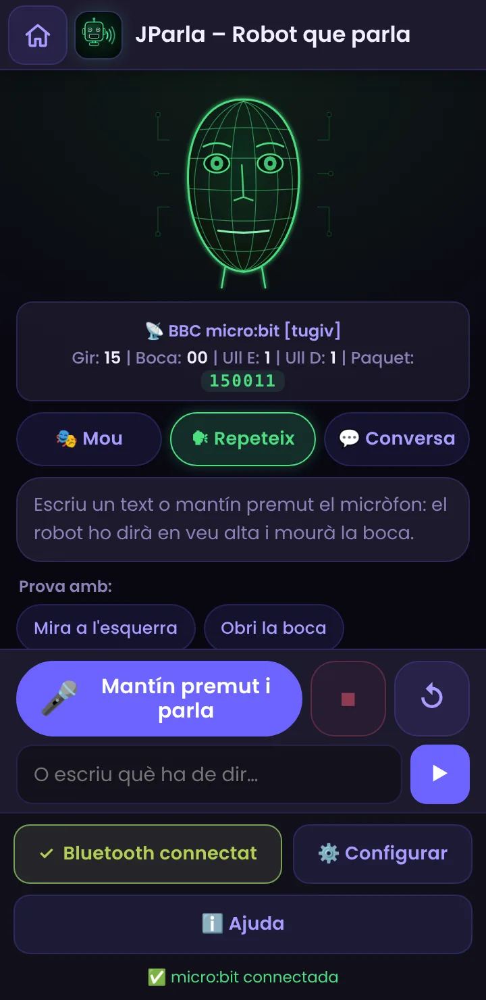
- Obri JParla en Chrome (Android o ordinador).
- Comprova que el Bluetooth del mòbil està activat (en Android 11 o anterior, també la ubicació; en Android 12 o posterior, el permís de dispositius propers).
- Prem 🔵 Connectar Bluetooth i tria BBC micro:bit a la llista.
- Quan estiga connectada, el botó diu ✓ Bluetooth connectat.
Tria què vols fer: els tres modes
A dalt de la pantalla hi ha tres botons: 🎭 Mou, 🗣 Repeteix i 💬 Conversa. Toca el que vulgues: canvien els exemples i el text de la caixa de baix, però el micròfon, el cap virtual i la connexió Bluetooth són els mateixos.
- L'app recorda l'últim mode que has usat.
- Pots passar d'un mode a un altre en qualsevol moment; si el robot està parlant o movent-se, s'atura.
- El botó ⏹ Parar atura el que estiga fent el robot i ↺ el torna al centre.
Mode Mou: mana el cap amb la veu o escrivint
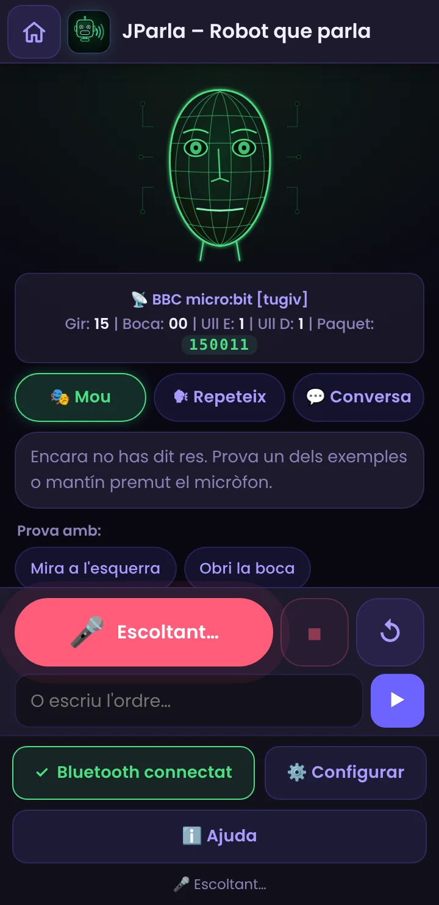
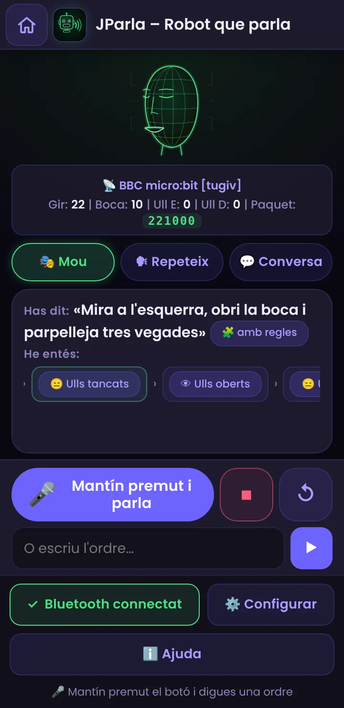
- Tria 🎭 Mou.
- Mantín premut el botó 🎤 i digues l'ordre amb normalitat, p. ex. «mira a l'esquerra i obri la boca». O escriu-la a la caixa de baix i prem ▶.
- Deixa de prémer: l'app transcriu la frase i veuràs «Has dit» i «He entés» (els passos, un a un).
- El cap virtual i la micro:bit es mouen pas a pas; el pas actual es ressalta. En este mode el robot no parla.
A Configuració pots canviar el botó perquè siga tocar per a començar i tocar per a acabar (útil si tens la mà ocupada). Els exemples de dalt es poden provar sense parlar.
Què pots dir
| Tipus | Exemples | Què fa |
|---|---|---|
| Gir | «mira a l'esquerra» · «gira a la dreta» · «al centre» · «un poc a la dreta» · «molt a l'esquerra» · «al 80 % a la dreta» · «gira 45 graus a l'esquerra» | Mou el cap. «Un poc» i «molt» ajusten la quantitat; també valen percentatges i graus; «un poc més» suma al que ja hi havia. |
| Boca | «obri la boca» · «tanca la boca» · «obri molt la boca» · «obri la boca al 50 %» | Obri o tanca la boca amb la quantitat que indiques. |
| Ulls | «tanca els ulls» · «obri els ulls» · «tanca l'ull dret» · «guinya l'ull» | Cada ull és 0 (tancat) o 1 (obert). |
| Gestos | «parpelleja tres vegades» · «di que no» · «parla» · «badalla» · «riu» · «dorm» · «desperta» · «escaneja» · «balla» | Són seqüències de moviments que l'app genera: la micro:bit només rep paquets normals. |
| Seqüències | «mira a l'esquerra i després a la dreta» · «obri la boca, tanca els ulls i després centra» | Uneix passos amb després, i després, una coma o i. |
| Velocitat | «poc a poc» · «ràpid» · «repeteix» · «tres vegades» | Canvia el ritme o repeteix. |
| Parar i centrar | «para» · «stop» · «centra» · «reinicia» | Atura el moviment o torna a la posició inicial. |
Pots parlar en valencià, castellà o anglés, i fins i tot barrejar-los: les regles ho entenen tot alhora. També entén els números en paraules («tres», «cinquanta»).
Mode Repeteix: fes parlar el robot
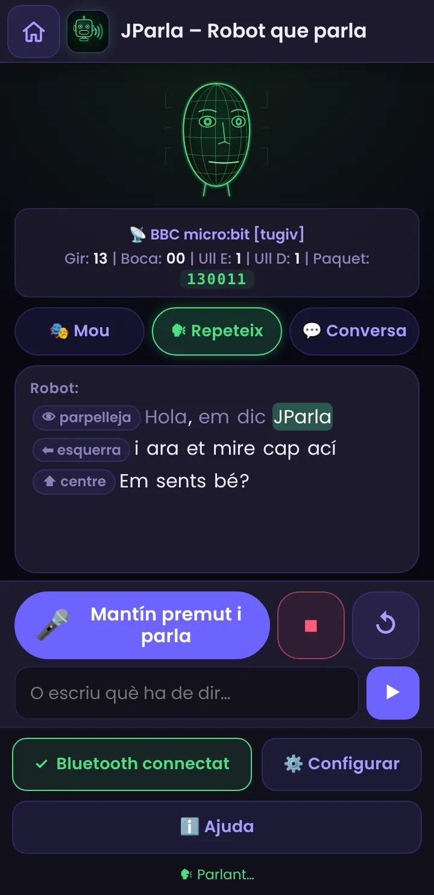
- Tria 🗣 Repeteix.
- Escriu el text a la caixa de baix i prem ▶, o mantín premut el micròfon i parla: el robot repetirà el que has dit.
- El mòbil ho llig en veu alta i la boca del robot s'obri a cada síl·laba. A la pantalla es ressalta la paraula que s'està dient.
- El botó ⏹ Parar fa callar el robot a l'instant; ↺ el torna al centre.
També pots provar els exemples de dalt: cada un mostra una cosa diferent (una frase simple, ordres de moviment, sorpresa i son).
Ordres entre [claudàtors] (Repeteix i Conversa)
En els modes Repeteix i Conversa, dins del text pots escriure ordres entre claudàtors. No es pronuncien: el robot les fa just en el lloc on les escrius. Per exemple: [parpelleja] Hola! Mira cap ací [esquerra] i ara cap allà [dreta] [centre]
| Ordre (valencià · castellà · anglés) | Què fa |
|---|---|
| [parpelleja] · [parpadea] · [blink] | Tanca i obri els dos ulls. |
| [guinya_esquerra] · [guiña_izquierda] · [wink_left] [guinya_dreta] · [guiña_derecha] · [wink_right] | Guinya un ull. |
| [esquerra] · [izquierda] · [left] [dreta] · [derecha] · [right] [centre] · [centro] · [center] | Gira el cap cap a un costat o el torna al centre. |
| [nega] · [niega] · [no] | Nega amb el cap (esquerra-dreta, ràpid). |
| [sorpresa] · [sorpresa] · [surprise] | Ulls oberts i boca oberta un instant. |
| [riu] · [ríe / risa] · [laugh] | La boca fa «ja, ja, ja». |
| [pensa] · [piensa] · [think] | Mira cap a un costat i torna. |
| [dorm] · [duerme] · [sleep] [desperta] · [despierta] · [wake] | Tanca els ulls i la boca / obri els ulls. |
| [pausa] · [pausa] · [pause] | Un silenci curt. |
Mode Conversa: parla amb la IA
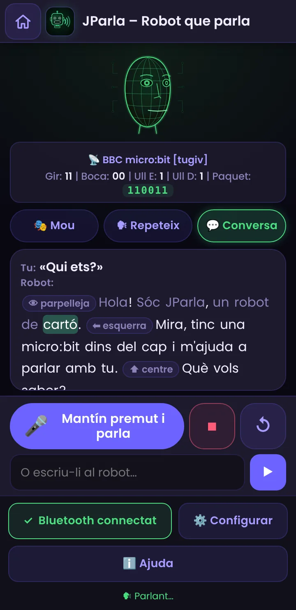
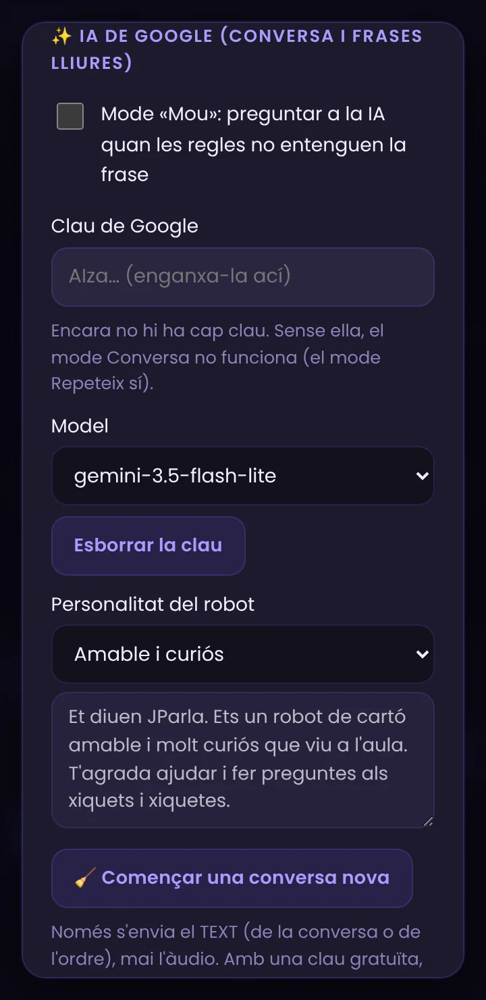
- Consegueix una clau gratuïta de Google AI Studio. És la mateixa que usa Què veuen de tu: si ja la has posada allí, ja la tens ací.
- A ⚙️ Configurar → ✨ IA de Google, apega la clau (es guarda només en este dispositiu).
- Tria la personalitat del robot (amable, mestre de ciències, pirata, robot antic) o escriu la teua en «Personalitzada…».
- Passa a 💬 Conversa i parla o escriu. El robot contesta en veu alta, i la IA pot afegir ordres com [parpelleja] o [esquerra] on convinga.
- «🧹 Començar una conversa nova» esborra la memòria de la conversa (el robot recorda els últims torns).
IA també en el mode Mou (opcional)
Si les regles de Mou no entenen una frase («fes com si estigueres sorprés»), JParla pot preguntar-li a Gemini. Està desactivat per defecte: a ⚙️ Configurar → ✨ IA de Google marca «Preguntar a la IA de Google quan les regles no entenguen la frase».
Del que dius al missatge que s'envia
Cada pas es transforma en un text de 6 dígits, igual que a JFace. Per exemple, «obri la boca» a mitges: 150011 → 151011. Si dius «mira a l'esquerra, obri la boca i parpelleja», la micro:bit rep una successió de missatges, un darrere l'altre:
| Camp | Què significa | Valors |
|---|---|---|
| Gir (dígits 1–2) | Gir horitzontal del cap | 15 = de cara. Cap a un costat puja (fins a ≈ 25) i cap a l'altre baixa (fins a ≈ 5). El recorregut es pot ajustar. |
| Boca (dígits 3–4) | Obertura de la boca | 00 = tancada; fins a l'«obertura màxima» de la configuració (20 per defecte). |
| Ull E / Ull D (dígits 5 i 6) | Cada ull | 0 tancat · 1 obert |
Els missatges s'envien només quan alguna cosa canvia, a un ritme que marca l'interval entre paquets (0,1 s per defecte): el moviment és suau perquè l'app va creant posicions intermèdies.
Com se sincronitza la boca amb la veu
(Mode Repeteix i Conversa.)
El navegador no diu exactament quan s'està pronunciant cada síl·laba, així que JParla fa una estimació:
- Compta les síl·labes de cada paraula (regles per a valencià, castellà i anglés) i decideix com d'oberta ha de quedar la boca: a molt oberta, e/o a mitges, i/u poc.
- Calcula quan toca cada síl·laba segons la velocitat de la veu (i fa una pausa en les comes i els punts).
- Aprén: en acabar cada frase compara el que ha tardat de veritat la veu amb el que havia previst i ajusta el ritme per a la frase següent. Així, en Android (on les veus no avisen paraula a paraula) la boca s'adapta sola després de 2–3 frases.
- Si el navegador sí que avisa de cada paraula (sol passar a l'ordinador), la boca es resincronitza amb eixos avisos.
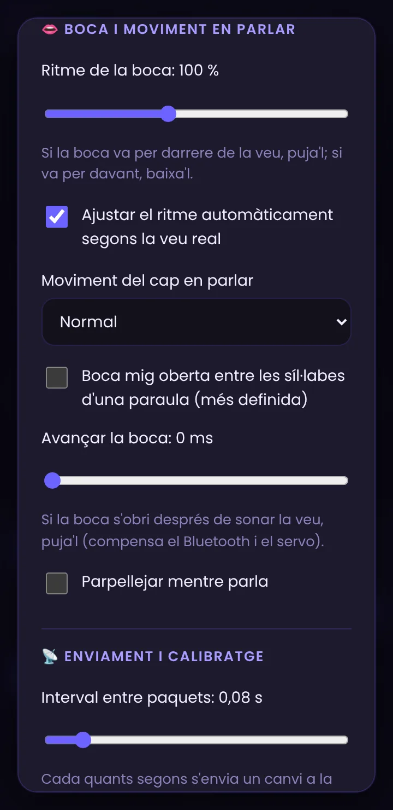
Veus, micròfon i idiomes
La veu del robot (Repeteix i Conversa)
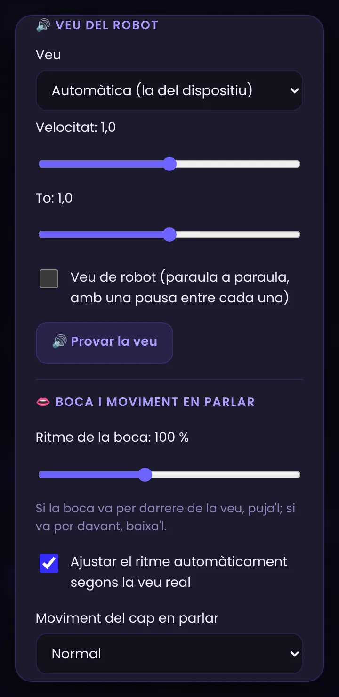
- Idioma de la conversa: per defecte és el de l'app (valencià, castellà o anglés). Afecta a la veu, al micròfon i a les respostes de la IA.
- Veu: l'app usa les veus que té el dispositiu. En Android depén del motor de «text a veu» (normalment Serveis de veu de Google). Si no hi ha veu en valencià/català, o en l'idioma que vulgues, instal·la les dades de veu (Configuració d'Android → Idioma → Eixida de text a veu; la ruta canvia segons el fabricant). L'app t'avisa si falta.
- Velocitat i to: canvien la veu del mòbil. 🔊 Provar la veu diu una frase per a comprovar-ho.
- Veu de robot: diu el text paraula a paraula, amb una pausa entre cada una, per a un efecte més «robòtic» (el mateix truc de les comes de la idea original).
El micròfon: veu del navegador o Whisper local
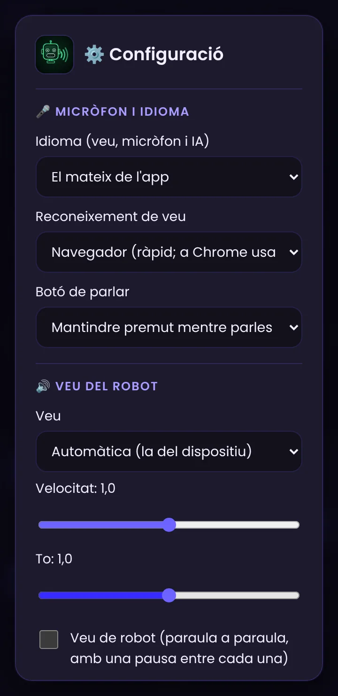
A ⚙️ Configurar → 🎤 Micròfon i idioma tries qui transcriu el que dius:
| Navegador | Whisper local | |
|---|---|---|
| Com funciona | El reconeixement de veu del navegador. | Un model d'IA (Whisper) que s'executa al teu dispositiu. |
| Internet | A Chrome, l'àudio el processa Google: cal Internet. | Només per a descarregar el model una vegada; després, sense Internet. |
| Privacitat | L'àudio surt del dispositiu (en Chrome). | L'àudio no surt del dispositiu. |
| Velocitat | Immediata. | Un parell de segons de més, segons el mòbil. |
| Descàrrega | Cap. | ≈ 40 MB (menut) o ≈ 80 MB (mitjà, recomanat). |
| Compatibilitat | Chrome i Edge; no a Firefox. | La majoria de navegadors moderns. |
- Tria Whisper local i el model (el mitjà és més precís).
- Prem 📥 Descarregar model (millor amb Wi-Fi). Mentre es descarrega, una capa bloqueja l'app i mostra el progrés.
- Quan diga ✅ Descarregat al dispositiu, ja pots usar-lo sense Internet.
Calibra el robot
Cada robot és un poc diferent. A Enviament i calibratge :
- Recorregut del gir i obertura màxima de la boca: fins on gira el cap i com d'oberta queda la boca. Els botons ⬅ ⬆ ➡ i 👄 Obrir la boca et deixen comprovar-ho.
- Invertir l'esquerra i la dreta: si el cap gira cap a l'altre costat del que apareix a la pantalla.
- Interval entre paquets: cada quant s'envia un canvi. Un valor baix (0,03–0,1 s) fa la boca més precisa; si el servo tremola o el Bluetooth es satura, puja'l.
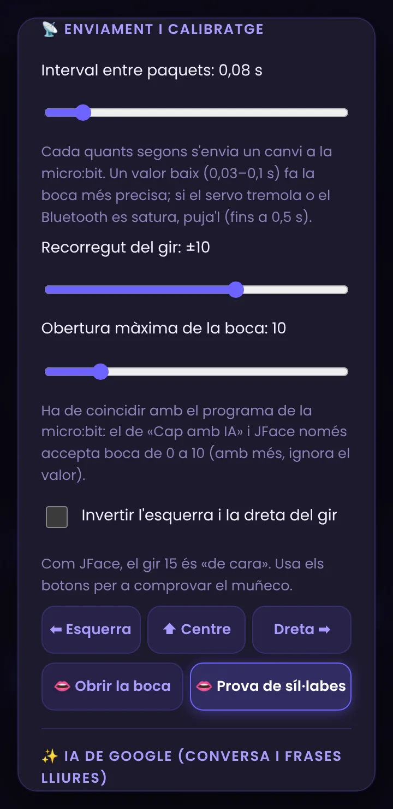
Sense Internet
- Amb Internet, a la pantalla principal de PIAR prem «Descarregar per a ús sense Internet»: guarda l'app i, si el motor Whisper hi és, el seu model de veu.
- Després, JParla funciona sense connexió: el mode Mou (amb les regles i escrivint o amb Whisper local) i el mode Repeteix si el dispositiu té veus instal·lades (la veu del sistema sol funcionar sense Internet; algunes veus «en línia» no).
- El micròfon del navegador (Chrome) i la IA de Google sí que necessiten Internet; si no n'hi ha, escriu el text o usa Whisper local.
- No actives el mode avió si vols Bluetooth (o torna a activar-lo).
Idees per a classe
- Teatre de robots: cada grup escriu un guió amb ordres ([riu], [sorpresa], [esquerra]…) i el robot l'«interpreta».
- Compta síl·labes: escriu paraules llargues i curtes i observa quantes vegades s'obri la boca. On s'equivoca l'app? Per què (diftongs, hiats, sigles, números)?
- Personalitats: la mateixa pregunta a un robot amable, a un pirata i a un mestre de ciències. Què canvia en la resposta? Qui decideix com parla una IA?
- IA i seguretat: prova que el robot no siga capaç de revelar dades personals ni d'obeir ordres «tramposes». Què fa l'app per a limitar-ho i què no pot garantir?
- Robot en altres idiomes: tria anglés i compara com compta síl·labes i com sona.
- Programació: canvia el programa de la micro:bit perquè, a més de la boca, s'encenguen els LEDs al ritme de la veu.
- Com entén una IA? En Mou, prova la mateixa ordre dita de maneres diferents («gira a l'esquerra», «mira cap a l'esquerra», «esquerra»). Què entén i què no? Per què?
- Regles vs IA: compara una frase amb regla («obri la boca») amb una lliure («fes com si estigueres sorprés»). Quan cal la IA? Quins riscos té?
- Veu del navegador vs Whisper: compara velocitat, errors i privacitat. On va l'àudio en cada cas?
- Accessibilitat: el cap es controla sense mans ni pantalla. Quines altres coses es podrien controlar així?
Si alguna cosa no va bé
| Què passa | Per què | Com es resol |
|---|---|---|
| No se sent res | Volum baix, so silenciat o el dispositiu no té veus instal·lades. | Puja el volum i prem 🔊 Provar la veu. Instal·la veus del sistema (apartat 11). |
| «El navegador no deixa parlar encara» | Chrome demana un toc a la pantalla abans de permetre l'àudio. | Toca la pantalla i torna-ho a provar. |
| «No hi ha veu per a este idioma» | El dispositiu no té veu en valencià o en l'idioma triat. | Instal·la les dades de veu o tria un altre idioma de la conversa. |
| La boca va desfasada respecte de la veu | Cada veu va a una velocitat diferent. | Espera 2–3 frases (aprén) o usa «Ritme de la boca». |
| La boca no para quieta o el servo vibra | Massa paquets o obertura massa gran. | Puja l'interval entre paquets o baixa l'obertura màxima. |
| «No t'he sentit» / «No es pot usar el micròfon» | No has donat permís (o has deixat anar el botó massa prompte). | Mantín premut mentre parles; cadenat de l'adreça → Permisos → Micròfon. |
| «Per a conversar cal la clau de Google» | No hi ha clau guardada. | Configuració → IA de Google. El mode Repeteix no la necessita. |
| «La IA de Google no ha respost (quota esgotada)» | S'ha superat el límit gratuït. | Espera una estona, tria gemini-3.5-flash-lite o usa una altra clau. |
| El robot no es mou però sí el cap virtual | Falta connectar la micro:bit. | Prem Connectar Bluetooth i comprova que el programa és el de JFace (guia de JFace); en iPhone/iPad no funciona. |
| No m'entén una frase (Mou) | No té cap regla per a eixa frase. | Mira els exemples, digues-la més senzilla o activa la IA de Google. |
| Diu «el cap només pot girar…» | Has demanat assentir o mirar amunt/avall. | No es pot: el cap només gira, obri la boca i els ulls. |
| «La veu del navegador necessita Internet» | A Chrome, el reconeixement el fa Google. | Connecta't, escriu l'ordre o usa Whisper local. |
| Whisper no es descarrega | No hi ha Internet, no hi ha espai o el motor no està inclòs. | Prova amb Wi-Fi i espai lliure; l'app et diu què ha passat. |
| El cap gira al revés | El teu muntatge és el contrari. | Marca «Invertir l'esquerra i la dreta del gir». |